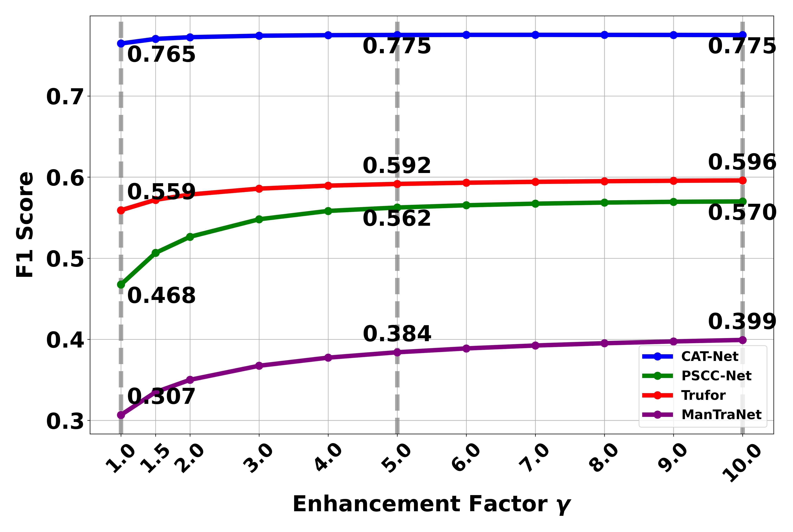
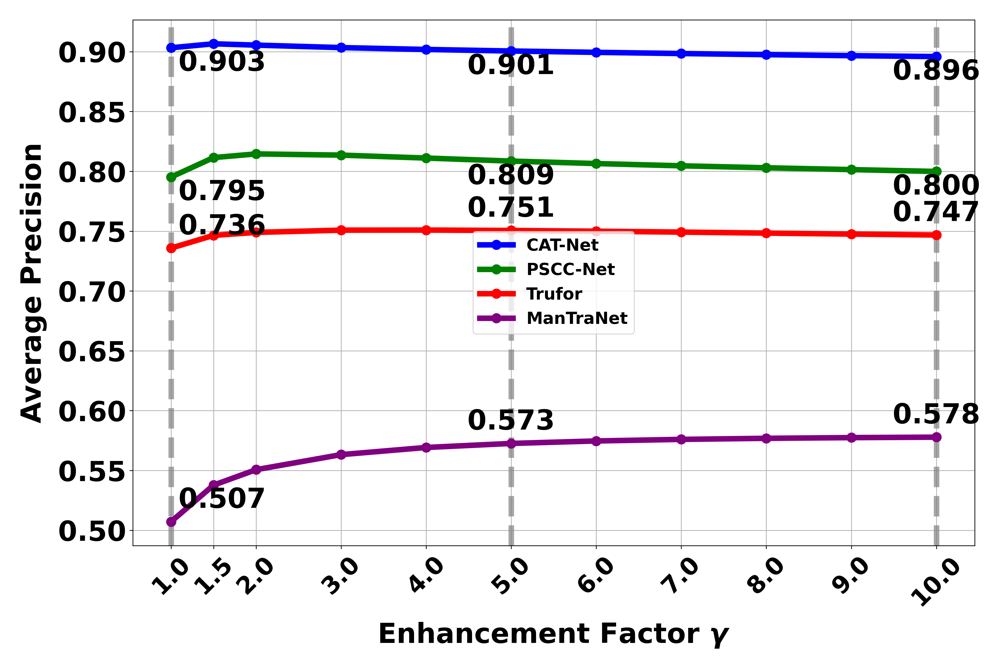

Fake Detection and Context Enhancement
SOTA Fake Localization Results
We provide additional results of SOTA fake localization methods for inpainting detection, serving as a supplement to Figure 6 in the paper.

Inpainting detection across different SOTA models. Left to right: CAT-Net, ManTraNet, Trufor, PSCC-Net.
Context Enhancement Versus Enhancement Factor
We analyze the relationship between different enhancement factors and detection performance. Here we explore how the enhancement factor (γ) affects the detection capability of models. The enhancement factor controls how much weight is given to the context information. A higher γ value means the final prediction placing greater emphasis on contextual information during the detection process..


The results reveal interesting patterns in how the enhancement factor (γ) affects detection performance:
- For F1 scores, we observe that performance improves significantly as γ increases up to 5, after which the improvement plateaus. This suggests that there is a point of diminishing returns in emphasizing context information.
- For Average Precision (AP), we observe a different trend. While AP initially improves with increasing γ values, it starts to decline when γ exceeds 5. This decline can be attributed to the increased emphasis on context information leading to more false positives, which AP is more sensitive to compared to F1 score.
- Based on these observations, we select γ = 5 as the optimal enhancement factor in our paper, balancing the benefits of context enhancement while avoiding the negative impact of excessive false positives that occur at higher γ values.
Context Enhancement Versus Mask Size
We break down the performance of each SOTA fake detection model and their context-enhanced version by different mask sizes in our dataset. First, we sorted all images based on their mask size proportion, which represents the ratio of the manipulated area (mask) to the total image area. To ensure a balanced analysis, we divided the sorted data into 10 bins, with each bin containing an equal number of images regardless of the mask size range it covers. This equal-frequency binning strategy, rather than equal-width binning, ensures that each data point in our visualization represents the average performance (F1-score and AP) calculated from the same number of samples, making the comparison more statistically meaningful. The results are displayed in a 2×2 grid, where each subplot shows one model's performance across three methods (Oracle, Ours, and Original). The x-axis labels indicate both the bin number and its corresponding mask size proportion range, allowing us to observe how performance varies with the relative size of the manipulated region in the images.